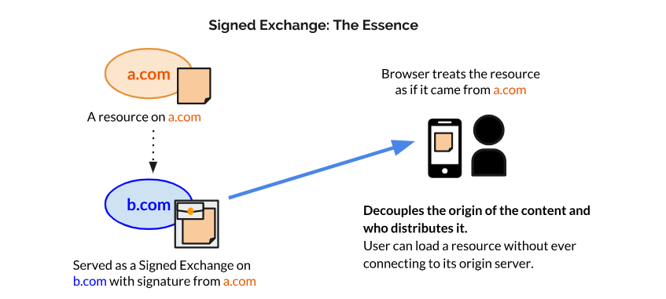
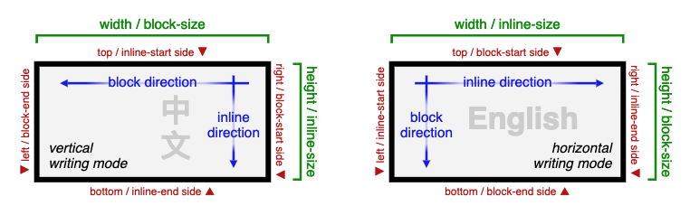
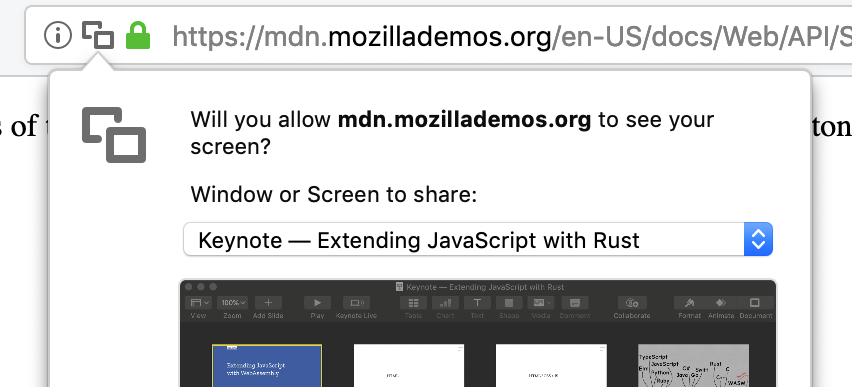
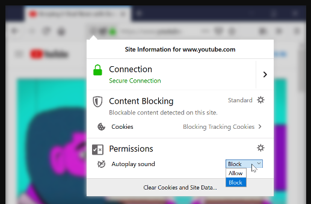
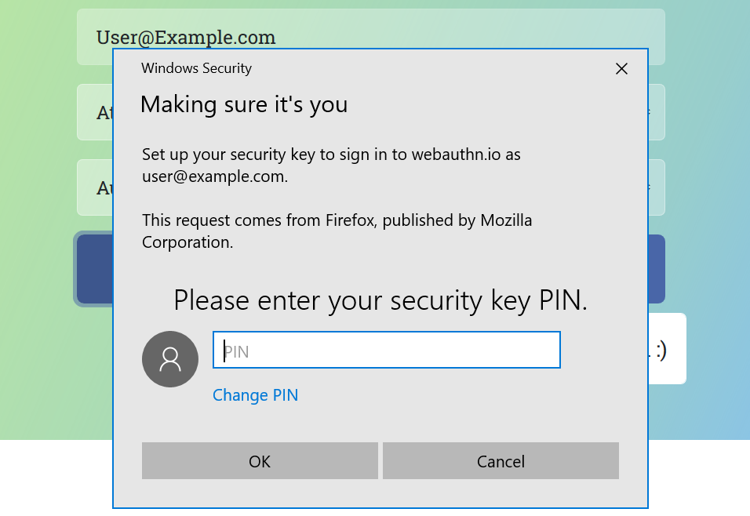
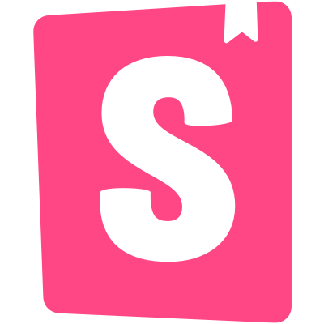
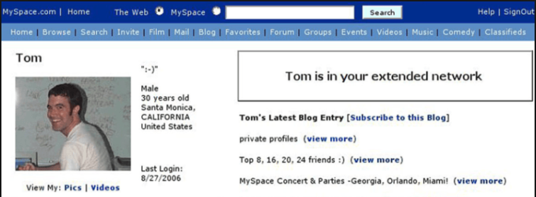
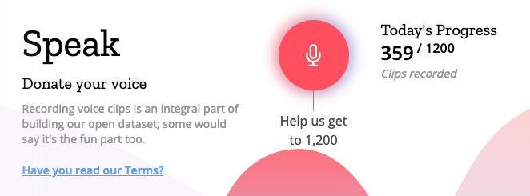
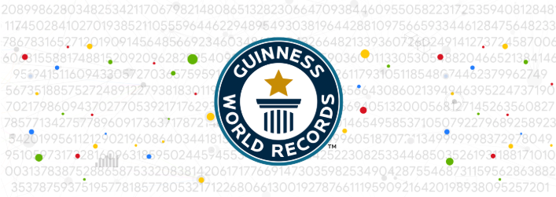
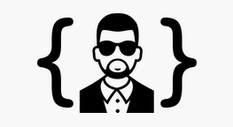

Bleeding Edge Web: March 2019
News From the Bleeding Edge
— Brian Moeskau (@bmoeskau)
Visual Regression Testing with Percy.io
— Robert DeLuca (@robdel12)
Level Up with Redis + Node
— Ted Patrick (@__ted__)
EnableDB: An Experiment with DB Gateways
— Corey Butler (@goldglovecb)
Thanks to our premiere sponsor:
Housekeeping
- Speakers and sponsors always wanted (edgeatx.org)
- Don't forget your parking validation
- Omni hotel bar (downstairs) after meetup
- Anyone hiring / looking?
News from the
Bleeding Edge
Browser Pop Quiz
Last check: February 21, 2019:
Browser Pop Quiz
As of March 21, 2019:
Chrome 73

Released March 12th —Release Notes (video)
- Websites can be installed like native apps
- Add a manifest, icons, and boilerplate service worker
- Now supported on all mobile + desktop platforms
Chrome 73

Chrome 73
- Create seamless reusable styles via the Shadow DOM
- Avoid duplication, FOUC, and other issues with manual creation
- Leverages the existing CSSOM
const sheet = new CSSStyleSheet();
sheet.replaceSync('a { color: red; }');
document.adoptedStyleSheets = [sheet];
Chrome: Bonus
- Async key-value replacement for localStorage (Chrome 74)
- First JavaScript standard built-in module
- Import JS from the browser — no download required!
- Similar to web APIs, but only importable (not global)
import {storage} from 'std:kv-storage';
storage.get('preferences');
Firefox 66

Released March 19th —Release Notes
- Layout via logical, rather than physical, direction
- E.g. padding-block and padding-inline

Firefox 66

Firefox 66
- Audibile audio and video blocked by default
- Muted autoplay is still allowed
- HTMLMediaElement.play() returns NotAllowedError

Firefox 66
- Supports WebAuthn via Windows Hello
- Can use fingerprint, iris scan or facial recognition
- Also supports CTAP (e.g. Google Authenticator)

Edge 18

Switching to Chromium/V8 !!
- Announced on December 6 — last reminder :)
- Goal is to improve compatibility + release cadence
- They still plan to support ChakraCore (for now?)
- Yet another sign of the increasing Microsoft OSS focus
Languages, Libraries &
Frameworks
Ionic 4: React Beta

Helps developers build and ship beautiful cross-platform hybrid apps
Announced February 21
- Started in 2013 on Angular 1
- Currently ships with 70 components
- Focus on hybrid mobile + desktop + PWA (not native)
Storybook 5.0

Build bulletproof UI components faster
Announced March 5
- Complete overhaul of developer experience
- Theme-ready component library
- Add-on architecture / API
- New site with themes and improved urls
Ink 2.0
React for CLIs
Announced March 6
- Build and test your CLI output using React-style components
- Build flexbox layouts in the terminal!
import React from 'react';
import {render, Box} from 'ink';
const Demo = () => (<Box>Hello World</Box>);
render(<Demo/>);
WebAuthn Finalized
- The W3C declared it an official web standard on March 4th
- Supported by Chrome, FF and Edge (and now Win 10 :)
- Supported in Safari Previews since December
- The days of typed passwords are numbered...
1M+ Invalid SSL Certs Issued
- A misconfiguration of EJBCA certificate authority package
- Apple and Google issued 63 bit certs
- The difference between 2^63 and 2^64 is ⟩ 9 quintillion
- They are currently revoking and reissuing affected certs
MySpace Snafu
- Wait, MySapce is still a thing?!
- They lost all media files uploaded between 2003 and 2015
- An estimated 53 million files
- Due to a "server migration project" with no backups

Mozilla's initiative to help teach machines how real people speak
- Record and review open source human voices
- High-quality, public, cross-language voice dataset

New Pi Record
- On March 14th Google computed pi to 31.4 trillion decimals
- 31,415,926,535,897 to be exact (π x 10^13)
- Used y-cruncher running on Google Cloud
- New Guiness World Record (by 9 trillion digits)

- Client-side indecent image checking
- Powered by TensorFlow
- Try the demo or check out the code
const model = await nsfwjs.load('/model/')
const img = document.getElementById('questionable_img')
const predictions = await model.classify(img)
console.log('Predictions: ', predictions)
And now for something completely different...
A free JSON API for random Kanye West quotes
{
"quote": "I feel like I'm too busy writing history to read it.",
"id": "TTCFIlI8gbn7c9YzCRAz"
}

Thanks!
 ←→
←→
/
#